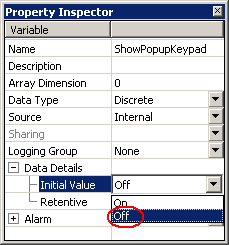

|
|
|
|
|
|
|
|
To display the popup window with the keypad, create an action. This section explains how to set up a popup window panel, using a Numeric Display Input as an example. If you use Value Animation, the input status variable acts in the opposite way. For more information, see Section 11.9.4, Setting Up Data Inputs.
In the Navigator window's Project tab, right-click the Actions node and select New Action.
Go through the wizard and set the following values:
|
Field |
Value |
|
Trigger Type |
Conditional |
|
Trigger Condition |
On Data Change |
|
Operation |
Popup |
Define the popup attributes. For more information, see Section 9.5.5, Popup Window Operations. When the value of the Conditional variable changes, the script is executed.

The Data Display part is not in input mode at startup. To synchronize the input status variable with the actual input mode, set the Initial Value to OFF.

When using an input status variable with Value Animation inputs, set the Initial Value of the input status variable to ON.